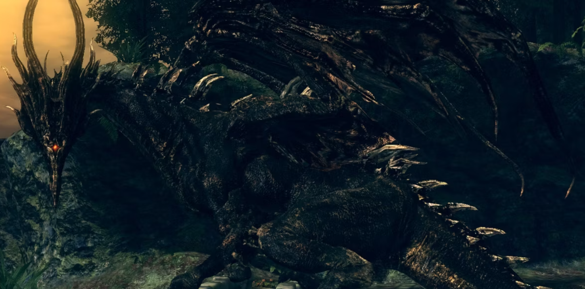
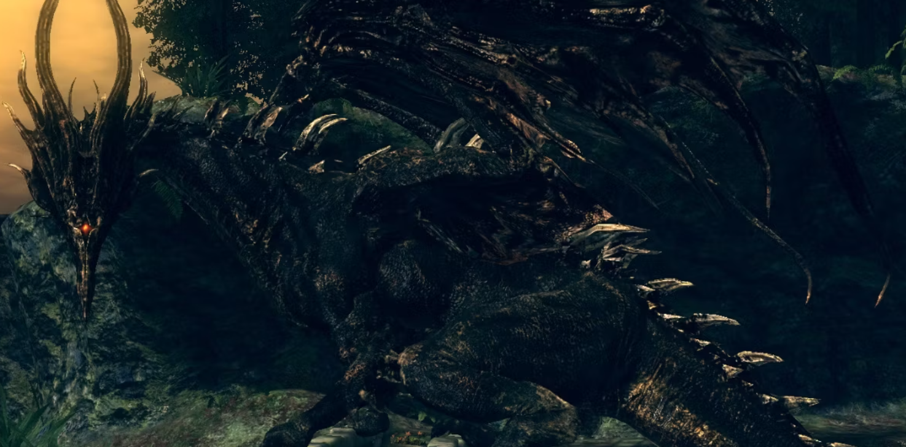

Dark Souls (ダークソウル Dāku Souru?) es un videojuego de rol de acción, desarrollado por la empresa From Software para las plataformas PlayStation 3, PlayStation 4, Xbox 360 y Microsoft Windows, distribuido por Namco Bandai Games. Anteriormente conocido como Project Souls, es el segundo videojuego de la serie Souls. Su lanzamiento fue el 22 de septiembre de 2011 en Japón, 4 de octubre en Norteamérica, 6 de octubre de 2011 en Australasia y 7 de octubre de 2011 en Europa. El 24 de agosto de 2012, se lanzó la edición Prepare to Die para PC, presentando contenido adicional previamente inaccesible para los usuarios de PlayStation 3 y Xbox 360. El 23 de octubre de 2012, el contenido adicional de la versión PC fue publicado como contenido descargable para consolas bajo el título Artorias of the Abyss. Dark Souls tiene lugar en el reino ficticio de Lordran. Los jugadores toman el papel de un personaje humano no-muerto que ha sido elegido para realizar un peregrinaje para descubrir el destino de los no muertos.
A veces perder en un juego de video al inicio puede llegar a causar que dejemos este pausado por un largo tiempo, no obstante todo tiene su truco, Aquí dejamos un recopilatorio de videos en donde mostramos como empezar a jugar estos
 
